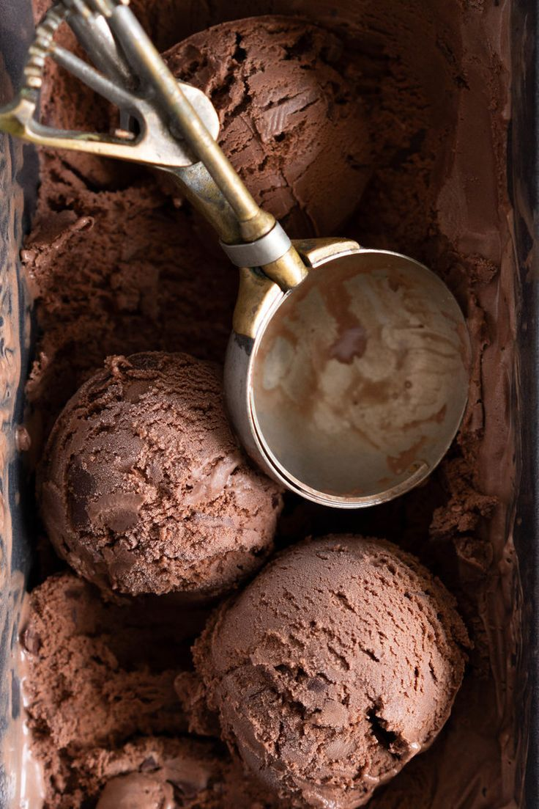

Products
100% natural
Oreo Choux Ice Cream
Galletas oreo son las mejores galletas en la tierra. La mejor parte acerca de estas galletas es que usted no sólo disfrute de un número de crema rica.

Cafe Choux Ice Cream
El mejor helado sin un fabricante! Café con sabor de helado pintados con mini chips de chocolate es ideal para una tarde de verano me recogiera.

Chocolate Choux Ice Cream
con el Doble de Helado de Chocolate. El último ice cream sandwich - casero, rico helado de chocolate está encajonado por dos ligero y crujiente de chocolate choux.
Fresa Choux Ice Cream
Esto realmente es El Mejor Helado de Fresa Receta alrededor. Es super cremoso y tiene un montón de fresco sabor a fresa. Lo que lo hace el mejor helado de fresa
Mango Choux Ice Cream
Este cremoso Helado Vegano de Mango tiene solo tres ingredientes y no tiene azúcares añadidos. Es perfectamente rico, cremoso y tan delicioso.

vainilla Choux Ice Cream
Helado de Vainilla casero sin un fabricante de helados y no de leche condensada, una indulgente delicia de verano, es vibrante y refrescante
Hecho para ti
¿Te gusta el sonido del helado en sabores que incluyen mantequilla de nuez, brownie de dulce de azúcar, chocolate amargo y espresso? Entonces debes visitar Ice Cream.
A medida que el clima se calienta, no hay mejor
manera de celebrar el verano que con un gran cono de helado. De alguna manera, nada dice "¡Verano!" como el helado, un placer que nos encanta ver disfrutar a nuestros hijos y que nunca se vuelve aburrido o viejo puesto que
este delicioso postre contiene una importante fuente de calcio que nos aporta energía, fortalece nuestros huesos y previene las caries, El helado contiene un alto contenido de proteínas y es rico en aminoácidos esenciales para
beneficio de los niños, jóvenes, adultos y ancianos,
Este flan sedoso, delicioso y muy clásico tiene sabores de ensueño. Las proporciones particulares de leche y crema a yema de huevo le dan al helado una contextura
espesa pero no pegajosa que se siente decadente pero no pesado. Para algo un poco más ligero, se usa más leche y menos crema, siempre que los lácteos sumen 3 tazas. Se reduce las yemas de huevo para una base más delgada.
Sabores como brownie contienen fudge brownies horneados desde cero, la chispa de chocolate contiene remolinos de chocolate negro derretido y las nueces para mantequilla de nuez están recién tostadas. Para la mayor cantidad
posible de sus ingredientes, Ice cream se asocia con agricultores locales y tostadores de café.
Un delicioso cono te aportará sensaciones de placer, felicidad y motivación.


SÓLO INGREDIENTES EXTRAORDINARIOS PARA UN SABOR ÚNICO
Cada cucharada de nuestro helado inicia con cuatro ingredientes -crema, leche, azúcar y huevos. A eso agregamos después el toque que nos hace extraordinarios.